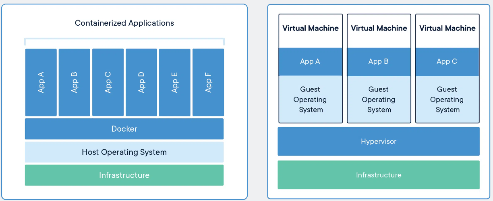

3. Docker and Containerisation¶
This tutorial gives a brief introduction to a key element of Starling - containerisation. By the end you will hopefully have an idea of what containerisation is, what docker is, how to use it, and how we use it within Starling.
This is adapted from the Duckietown Docker Docs, Docker Docs tutorial, and a number of other resources.
3.1 Introduction¶
3.1.1 What is Containerisation and Docker¶
It would be nice to give a computer - any computer with an internet connection - a short string of ASCII characters (say via a keyboard), press enter, and return to see some program running. Forget about where the program was built or what software you happened to be running at the time (this can be checked, and we can fetch the necessary dependencies). Sounds simple, right? In fact, this is an engineering task that has taken thousands of the world’s brightest developers many decades to implement.
Thanks to the magic of container technology we now can run any Linux program on almost any networked device on the planet, as is. All of the environment preparation, installation and configuration steps can be automated from start to finish. Depending on how much network bandwidth you have, it might take a while, but that’s all right. All you need to do is type the string correctly.
Docker is one very widely used example of containerisation technology, and the one we make use of in Starling. They provide a large number of tools and programs to help us contain, develop, test and deploy our containers to the real world.
If you followed the getting started, you should hopefully have done the full docker install. If not, you can run the following command from a linux command line to install basic docker.
curl -sSL https://get.docker.com/ | sh
3.1.2 Docker Concepts in more detail¶
Adapted from Docker Resources
A container is a standard unit of software that packages up code and all its dependencies so the application runs quickly and reliably from one computing environment to another. A Docker container image is a lightweight, standalone, executable package of software that includes everything needed to run an application: code, runtime, system tools, system libraries and settings.
Container images become containers at runtime and in the case of Docker containers – images become containers when they run on Docker Engine. Available for both Linux and Windows-based applications, containerized software will always run the same, regardless of the infrastructure. Containers isolate software from its environment and ensure that it works uniformly despite differences for instance between development and staging.
Containers are Standard (can run anywhere), Lightweight (Share low level machine system and not the whole Operating System) and Secure (Each application is as isolated as possible). For us this also translates to providing Reproduceable and Reusable systems.

On the left, Containers are an abstraction at the app layer that packages code and dependencies together. Multiple containers can run on the same machine and share the OS kernel with other containers, each running as isolated processes in user space. Containers take up less space than VMs (container images are typically tens of MBs in size), can handle more applications and require fewer VMs and Operating systems.
On the right, Virtual machines (VMs) are an abstraction of physical hardware turning one server into many servers. The hypervisor allows multiple VMs to run on a single machine. Each VM includes a full copy of an operating system, the application, necessary binaries and libraries – taking up tens of GBs. VMs can also be slow to boot.
3.1.3 Starling Container Ecosystem¶
The purpose of Starling is to allow you to quickly and easily install and run a UAV simulation within a simulated environment, so that you can test your developed controllers against a semi-realistic scenario, to then test in the real world
Therefore Starling is a set of pre-built programs/executables, some of which are pre-configured for the following:
- Running a Physics Simulation with Visualisation
- Running the Drone autopilot control software locally (a.k.a Software In The Loop or SITL)
- Running the interface between Mavlink and other protocols such as the Robot Operating System (ROS)
- And many others...
These pre-built containers are all available in the StarlingUAS repository on github and on Docker Hub.
Together these containers form a modular ecosystem of drone systems which can be composed together to develop software for real drones. Any controllers developed via the simulator can be directly ported to run on a real drone.
3.2 Using Docker with Starling¶
3.2.1 Getting and Running Containers¶
Every docker container is registered to a developer or organisation. In Starling, our docker organisation is known as uobflightlabstarling. Within our organisation, we have a large number of Docker containers available. These Docker containers live inside container registries (such as DockerHub), which are servers that host Docker images. A Docker image is one particular version or snapshot of a container and is basically a filesystem snapshot - a single file that contains everything you need to run our container.
You can manually fetch one of our core containers called starling-mavros from docker hub using:
docker pull uobflightlabstarling/starling-mavros
You can also try and pull one of our simulation containers:
docker pull uobflightlabstarling/starling-sim-iris-px4-flightarena:latest
This might take a few minutes to download depending on internet connection (some containers like the simulation can be quite big!). Once downloaded, to see a list of Docker images on your machine, run:
docker images
Every image has an image ID, a name and a tag
REPOSITORY TAG IMAGE ID CREATED SIZE
uobflightlabstarling/starling-sim-iris-px4-flightarena latest 62d7f96637cf 3 weeks ago 5.97GB
uobflightlabstarling/starling-mavros latest b70812c16731 5 months ago 2.06GB
To run a Docker container, type the repository name, like so:
docker run uobflightlabstarling/starling-mavros
# Or with the tag if you want to run a specific tag (version) of that container
docker run uobflightlabstarling/starling-mavros:latest
In another terminal, you can see what is currently running using:
docker ps
CONTAINER ID IMAGE COMMAND CREATED STATUS PORTS NAMES
4fd1e0948f23 uobflightlabstarling/starling-mavros "/ros_entrypoint.sh …" 46 seconds ago Up 45 seconds vigilant_nobel
Note how your the running container has a container ID, a base image you ran, and at the end, a funny name vigilant_noble. This funny name is an alias for the container ID.
To stop the container, simply press ctrl+c in the terminal which you ran docker run.
As a second example, you can similarly try and run the simulator, this time also specifying a port mapping to let you see the simulator in your web-browser.
docker run -p 8080:8080 uobflightlabstarling/starling-sim-iris-px4-flightarena
Then you can navigate to localhost:8080 in your web browser to see the simulator. You should hopefully see something like the following:

You can use the cursor to move around the environment, we will be coming back to the simulator in a later section.
To stop the simulator, you can try and use ctrl+c, but sometimes this doenst work. Another way is to first get the container ID or name like before:
docker ps
CONTAINER ID IMAGE COMMAND CREATED STATUS PORTS NAMES
6a4bd538118c uobflightlabstarling/starling-sim-iris-px4-flightarena "/entrypoint.sh ros2…" 2 minutes ago Up 2 minutes 7681/tcp, 11345/tcp, 0.0.0.0:8080->8080/tcp trusting_diffie
See how the name is trusting_diffie with ID 6a4bd538118c.
You can then explicitly stop the container by running (it can sometimes take a minute).
docker stop trusting_diffie
# or
docker stop 6a4bd538118c
Dont forget to also remove the container afterwards
docker rm trusting_diffie
# or
docker rm 6a4bd538118c
3.2.2 Creating Containers¶
To create a Docker image we write a recipe, called a Dockerfile. A Dockerfile is a text file that specifies the commands required to create a Docker image, typically by modifying an existing container image using a scripting interface. They also have special keywords (which are always CAPITALIZED), like FROM, RUN, ENTRYPOINT and so on. For example, create a file called Dockerfile with the following content:
FROM ros:foxy # Defines the base image
RUN touch new_file1 # new_file1 will be part of our snapshot
CMD ls -l # Default command to be run when the container is started
Now, to build the image we can simply run:
docker build -t your/duck:v3 . # Where '.' is the directory containing your Dockerfile
You should see something like:
Sending build context to Docker daemon 2.048kB
Step 1/3 : FROM uobflightlabstarling/starling-mavros
--- ea2f90g8de9e
Step 2/3 : RUN touch new_file1
--- e3b75gt9zyc4
Step 3/3 : CMD ls -l
--- Running in 14f834yud59
Removing intermediate container 14f834yud59
--- 05a3bd381fc2
Successfully built 05a3bd381fc2
Successfully tagged your/duck:v3
Now run the command docker images in your terminal, and you should see an image called your/duck with tag v3:
docker images
REPOSITORY TAG IMAGE ID CREATED SIZE
your/duck v3 ea2f90g8de9e 1 minute ago 2.06GB
uobflightlabstarling/starling-sim-iris-px4-flightarena latest 62d7f96637cf 3 weeks ago 5.97GB
uobflightlabstarling/starling-mavros latest b70812c16731 5 months ago 2.06GB
This procedure is identical to the snapshot method we performed earlier, but the result is much cleaner. Now, instead of needing to carry around a 2.06GB BLOB, we can just store the 4KB text file and rest assured that all our important setup commands are contained within. Similar to before, we can simply run:
docker run -it your/duck:v3
total 0
-rw-r--r-- 1 root root 0 May 21 21:35 new_file1
Notice that as soon as we run the container, Docker will execute the ls -l command as specified by the Dockerfile, revealing new_file1 was stored in the image. However we can still override ls -l by passing a command line argument:
docker run -it your/duck:v3 [custom command]
In the next tutorial, we will go into more detail in how these Dockerfiles are constructed for us.
3.2.3 Layer Caching¶
An important concept in Docker is the layers. In the previous section you may think that every time we build, we end up having to copy over the entire parent container. e.g. your/duck:v3 takes up another 2Gb of storage space! In actual fact, it (thankfully) does not, because under the hood the executable does not exist as one giant individible binary. It is in fact split into multiple independnet layers which can be shared in between images!
Essentially each
RUNline in your Dockerfile is compiled into a new layer placed upon the previous layers.
This is helpful as if you try to build your container again, unless you change something, those previous layers are cached by Docker to be used instead of rebuilding the entire thing from scratch!
3.2.4 Inspecting a container¶
One of the downsides of containers is that manipulating files and inspecting the their state is not as simple. Previously, you could just browser through your own file system and check things. Now that a container has its own file system, its not as clear how you could check things have been set up correctly, or test run commands manually or similar.
There are a number of different ways, but the simplest way is to exec into a running container. As an example, you can run starling-mavros again in one terminal.
docker run uobflightlabstarling/starling-mavros
In another terminal, identify the container ID or name by using docker ps
CONTAINER ID IMAGE COMMAND CREATED STATUS PORTS NAMES
81b7dfb6c443 uobflightlabstarling/starling-mavros "/ros_entrypoint.sh …" 3 seconds ago Up 2 seconds angry_yalow
Note: The IDs have changed from the previous time we ran this container. Sometimes you want containers to persist, or do not want to delete them for testing and such.
We can then use the ID of 81b7dfb6c443 or its name angry_yalow to exec into a container to run a command:
docker exec -it angry_yalow [command]
For example, in most cases it will be most useful to open up a bash terminal to inspect contents:
docker exec -it angry_yalow bash
root@81b7dfb6c443:/ros_ws#
This opens up a terminal inside the container for you to navigate around and inspect things as you wish, in a similar manner to if you SSH'd into another machine.
Note: Use the
catcommand to view the contents of files.Note: These containers have almost no tools to keep them slim. If you want to edit things, you will need to download a command line file editor. Run
apt-get updatethen install an editor likenanowithapt-get install nano.
3.3 Next Steps¶
Hopefully you now have a decent understanding of what containerisation is and its purpose within Starling. You have also had a go at using the Docker command line tool to pull, run, build and inspect Starling containers going forward.
With all that, we are now at a point where you can start creating your own containers to use!